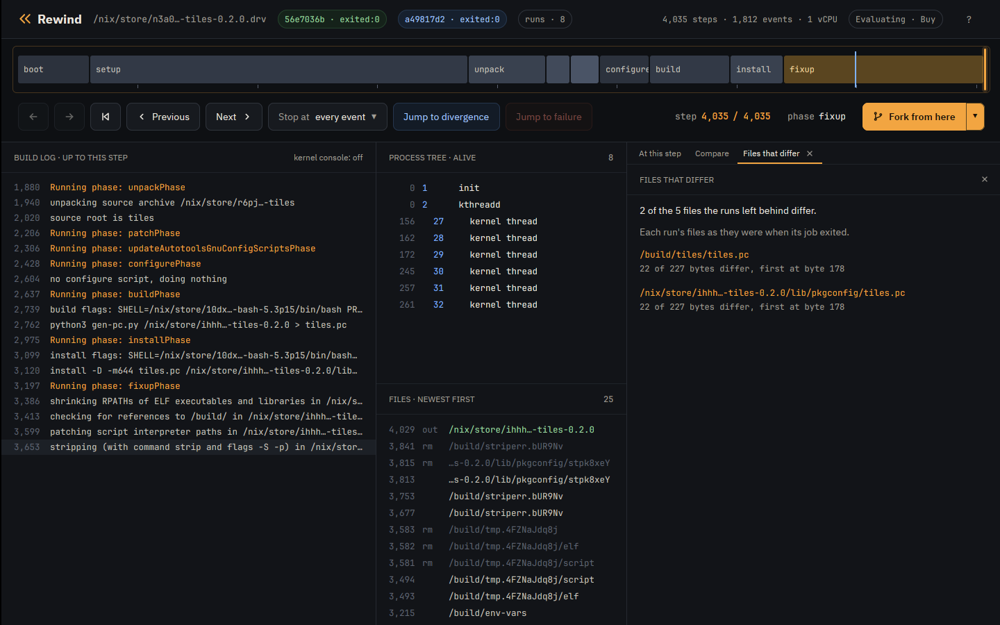
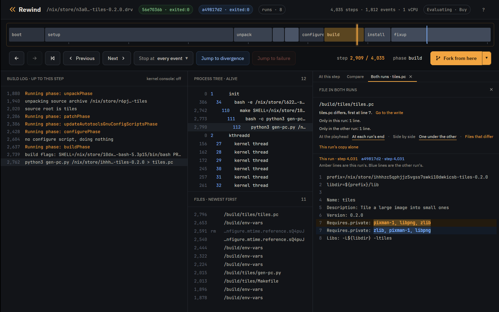

Tutorial · Reproducible builds
Tutorial: reproducible builds
A build is reproducible when the same inputs give the same bytes, so anyone can rebuild a package and check that it matches the one they were given. Rewind VM fixes every input of a build, down to its random numbers, the order its threads run in and the order its directories list in, so one build follows the same run every time. Change one of those inputs and build again: if the output changes, that input changed it, and both runs are kept to replay and compare.
The examples are tiles and plugins from
examples, two small
builds that each write one text file. Install Rewind as the
Nix tutorial does.
Build it under eight seeds
tiles writes its pkg-config file with a Python script that keeps the packages
it links against in a set. Python iterates a set in an order drawn from its hash seed.
nixpkgs pins that seed with PYTHONHASHSEED=0, and tiles unsets
it.
A run's seed decides every random number the build draws, including Python's hash seed.
check builds tiles under eight seeds, each with the default
schedule only:
$ rewind check --epoch 1790985600 --seeds 8 --schedules 0 --all --no-narrow github:fzakaria/rewindvm#tiles
rewind: packing 75 store paths for tiles-0.2.0
rewind: 8 random seeds, each run under schedule 0 and 0 other schedules: 8 runs
seed 0 schedule 0: exited:0 4035 steps d20b5efd388d run 56e7036bef2be348
seed 1 schedule 0: exited:0 4035 steps b4501793e383 run a49817d2dc937c04
seed 2 schedule 0: exited:0 4035 steps 0cd5db6c5c2c run 432d4935f39f9882
seed 3 schedule 0: exited:0 4035 steps 24f18f09c329 run 1202f2af6ed7f1fa
seed 4 schedule 0: exited:0 4035 steps b4501793e383 run 65e3d5aa30d5b7b0
seed 5 schedule 0: exited:0 4035 steps 5e1f0a457cbe run cb252aae5875cebc
seed 6 schedule 0: exited:0 4035 steps d20b5efd388d run a35f07059805822e
seed 7 schedule 0: exited:0 4035 steps b4501793e383 run 9c1eedac589f0c0b
6 of 7 other runs ended differently
The third column from the end is the start of the output's hash, and the last is the run
id. Eight builds made 5 different outputs, so tiles is not reproducible.
What differs
Compare seed 0's run with seed 1's:
$ rewind diff --outputs 56e7036b a49817d2
2 of the 5 files the runs left behind differ:
/build/tiles/tiles.pc: 22 of 227 bytes differ, first at byte 178
/nix/store/...-tiles-0.2.0/lib/pkgconfig/tiles.pc: 22 of 227 bytes differ, first at byte 178
$ rewind diff --file /build/tiles/tiles.pc 56e7036b a49817d2
tiles.pc differs, first at line 7.
Only in the left run: 1 line.
Only in the right run: 1 line.
Lines marked - are only in the left run. Lines marked + are only in the right run.
Name: tiles
Description: Tile a large image into small ones
Version: 0.2.0
- Requires.private: pixman-1, libpng, zlib
+ Requires.private: zlib, pixman-1, libpng
Libs: -L${libdir} -ltiles
--outputs lists the files the runs left behind whose bytes differ: the
installed tiles.pc, and the copy in the build directory it was installed
from. --file shows the lines: the same three packages in another order.
Who wrote it
rewind blame takes two runs and a file, and names the program that wrote the
first byte that differs:
$ rewind blame 56e7036b a49817d2 /nix/store/ihhhzc5qphjjz5vgss7swki10dwkicsb-tiles-0.2.0/lib/pkgconfig/tiles.pc
tiles.pc differs at byte 178. python3 (pid 112) wrote that byte at step 2,909 in run 56e7036b and at step 2,909 in run a49817d2.
22 of 227 bytes differ. The bytes from byte 178:
56e7036b 70 69 78 6d 61 6e 2d 31 2c 20 6c 69 62 70 6e 67 |pixman-1, libpng|
a49817d2 7a 6c 69 62 2c 20 70 69 78 6d 61 6e 2d 31 2c 20 |zlib, pixman-1, |
Who wrote the file in run 56e7036b, from the last writer back:
install (pid 122) copied it from /build/tiles/tiles.pc, starting at step 3,157. Its source already differs, so the copy did not cause the difference.
bash (pid 112) wrote /build/tiles/tiles.pc, starting at step 2,796. It is the first writer, and the file already differs when it is done.
Run a49817d2 made the file the same way, with the same programs.
In both runs, one write of 227 bytes, from byte 0, set byte 178.
python3 ran with the same command line in both runs, so the difference comes from something it read or from randomness.
What python3 read:
1 file that the build made, all the same in both runs: /build/tiles/gen-pc.py.
31 other files that the build did not make, such as programs and libraries.
Likely cause: something inside python3 (pid 112), such as randomness or the order its threads ran in. Its command line and the files the build made that it read are the same in both runs.
The first line is the answer: python3, pid 112, wrote that byte at step 2,909. The lines
after it show how blame got there. install only copied a file that already
differed. Before that, pid 112 opened /build/tiles/tiles.pc while it was
still bash, for the > redirect, then became python3. python3
had the same command line and read the same gen-pc.py in both runs, so the
cause is inside it, and the seed is the one input that changed.
Blame works from records the guest kernel keeps in every run: each write to a file, and each file a program opens. It finds the write that set the byte without replaying either run.
In the app
Open the two runs side by side:
$ rewind open 56e7036b --compare a49817d2The Compare tab's Files that differ link lists what diff --outputs does:

A click on a file opens it from both runs. One under the other puts each run's copy of a
changed line together, this run's in amber and the other's in blue. Go to the write moves
the playhead to the step whose write set the first byte that differs. For
/build/tiles/tiles.pc that is step 2,909, with
python3 gen-pc.py in the process tree:

Fix it
Sort the packages in gen-pc.py before writing them:
@@ -27,5 +27,5 @@
print("Name: tiles")
print("Description: Tile a large image into small ones")
print(f"Version: {VERSION}")
-print(f"Requires.private: {', '.join(requires)}")
+print(f"Requires.private: {', '.join(sorted(requires))}")
print("Libs: -L${libdir} -ltiles")$ rewind check --epoch 1790985600 --seeds 8 --schedules 0 --all --no-narrow .#tiles
...
0 of 7 other runs ended differently
same result under all 8 runsEvery seed now builds the same tiles.pc.
Directory order
plugins writes an index of the plugins it ships, in the order
os.listdir returns them. Under eight seeds it reproduces:
$ rewind check --epoch 1790985600 --seeds 8 --schedules 0 --all --no-narrow .#plugins
...
0 of 7 other runs ended differently
same result under all 8 runs
A directory lists in the order its filesystem keeps it. In the VM that order is the same
in every run: /build lists its newest file first. On a real machine, ext4
lists a directory by a hash of each name, keyed by a seed chosen when the disk was
formatted, so two machines can list one directory in two orders. The guest kernel does the
same when its command line has rewind.dirents=N: every directory lists in an
order keyed by N. check --dirents 3 builds it again under keys 1 to 3 and
compares each build with the stock order, dirents 0:
$ rewind check --epoch 1790985600 --seeds 1 --schedules 0 --all --no-narrow --dirents 3 .#plugins
dirents 0 schedule 0: exited:0 3885 steps 77b96f07540a run d9631407be54fc46
dirents 1 schedule 0: exited:0 3885 steps 3d555b541296 run 78fdad37cbc99586
dirents 2 schedule 0: exited:0 3885 steps 925dde4ef23a run 26adc9540fd107c7
dirents 3 schedule 0: exited:0 3885 steps abd7877043a8 run b4fabcb208cd04ad
3 of 3 other runs ended differentlyEach key builds another output. The index is the file that changed:
$ rewind diff --file /build/plugins/plugins.txt 78fdad37 26adc954
plugins.txt differs, first at line 3.
Only in the left run: 2 lines.
Only in the right run: 2 lines.
Lines marked - are only in the left run. Lines marked + are only in the right run.
# The plugins this package ships, one a line.
sharpen
+ resize
crop
- blur
rotate
- resize
+ blurUnder each key the index names the same five plugins in another order.
The key is one of the run's inputs, so each order replays.
Sort the names in gen-index.py:
@@ -12,7 +12,7 @@
directory = sys.argv[1]
print("# The plugins this package ships, one a line.")
-for name in os.listdir(directory):
+for name in sorted(os.listdir(directory)):
# Only the plugins' own files are plugins.
if not name.endswith(SUFFIX):
continue$ rewind check --epoch 1790985600 --seeds 1 --schedules 0 --all --no-narrow --dirents 3 .#plugins
...
dirents 0 schedule 0: exited:0 3885 steps 164f7a685a08 run f33b54b768d6600c
dirents 1 schedule 0: exited:0 3885 steps 164f7a685a08 run c99a668fc8928820
dirents 2 schedule 0: exited:0 3885 steps 164f7a685a08 run 04571eadc665dc44
dirents 3 schedule 0: exited:0 3885 steps 164f7a685a08 run 7dcc86078b483da9
0 of 3 other runs ended differently
same result under all 4 runsEvery key now builds the same output, 164f7a685a08.
What to read next
Real packages do this too: neatvnc 0.7.1's pkg-config file, which meson writes, differs between seeds, and setuptools 80.9.0 in nixpkgs builds a wheel with another version under another directory order.
-
Directory order
in the design notes: how the
rewind.direntskey works. - Read and write records in the design notes: what blame reads.
- The properties tutorial: seeds in tests.
The engine is free and MIT licensed. The desktop app is $49 personal or $99 per seat.